Anthony Di GiovanniWebsite developer
Your next website. A deeper connection.
I build websites that help organizations make a stronger first impression, communicate clearly, and connect with their audience.
As a Gallaudet University web developer and freelance partner, I combine full-stack development, UX thinking, and visual-first design to create modern, accessible digital experiences.
Selected work
Universities, advocates, and community organizations, each with a site that now works harder for the people it serves.
-
Gallaudet University
Modernized an aging university platform into a custom-built site, working with more than 100 departments and offices to turn diverse goals and content into one cohesive experience that’s easier to manage, navigate, and grow.
gallaudet.edu (opens in a new tab) -
California Association of the Deaf
Gave the homepage and main navigation a focused facelift: a cleaner first impression, a more cohesive brand, and faster paths to the information visitors come for.
cad1906.org (opens in a new tab) -

DWAVE
Led the move from an outdated website to a modern WordPress platform with clearer structure, better usability, and a presentation that’s far easier for the organization to maintain.
dwaveohio.org (opens in a new tab)
Technical expertise.
Human-centered thinking.
Whether you’re launching something new, modernizing an aging website, or improving an existing experience, I turn complex needs into clear, engaging, and maintainable websites.
Development & modernization
New builds, platform migrations, redesigns, and ongoing improvements. Responsive websites built to perform, scale, and stay practical to manage.
UX, accessibility & visual clarity
Intuitive navigation, clear hierarchy, and accessibility-minded decisions. As a Deaf developer, I bring a visual-first perspective to how people experience the web.
Direct collaboration
Work directly with the developer building your site. I translate your goals and your audience’s needs into a practical plan, and keep you involved throughout.
Have something in mind?
Let’s build something that works better.
Tell me about your organization, your audience, and what you want your website to accomplish. Whether you’re starting fresh, modernizing an existing site, or improving the user experience, I’d be glad to help.